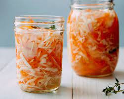

Pikliz

Haitian Pikliz (pickled carrots & cabbage)
This well-known Haitian condiment is traditionally served with
meat and frites (fried food). If you so please, you can also enjoy
it with other sides such as rice and beans, as many locals of
Haiti do.
Prep Time:
30 mins Servings:
14
Ingredients
- 8 oz green cabbage
- 5 oz finely shredded carrots (finely
shredded carrots can be found in stores
but you will have to slice the cabbage yourself.
Store-bought shredded cabbage is too coarse for
this recipe)
- 2 freshly squeezed limes
- 2 tbsp Salt
- 1 tbsp Olive oil
- 2 jalapeño peppers (sliced)
- 2 yellow scotch bonnet peppers (sliced)
Utensils
- Small mixing bowl
- Medium mixing bowl
- Kitchen knife
- Fork
- Spoon or whisk
- 16 oz jar or glass bowl
Steps
- In a small bowl, combine the lime juice, olive oil, salt,
and sliced peppers (you may add more or less peppers as
you see fit). Mix well with a spoon or whisk until the
salt has desolved almost entirely. Do not add
any water. Use a fork to crush the peppers a bit to bring out
their flavors, then set aside.
- Use a kitchen knife to thinly slice the cabbage.
- In a medium bowl, add the sliced cabbage and the shredded
carrots, then combine thoroughly with a fork.
- Add the lime juice to the mixture, leaving out the sliced
peppers (Do discard them!) and mix again.
- Put the sliced peppers in a 16 oz jar, then add the cabbage
and carrots mixture on top, including the lime juice. Close
the jar and Shake well until the mixture is fully soaked.
Leave out overnight at room temperature, then refrigerate.